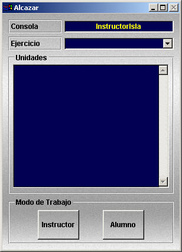

Arranque y Parada del Sistema
Encendido y apagado de las consolas del Simulador
Las consolas ejecutan bajo un entorno Windows, por lo que, tanto para su encendido como para su apagado se debe seguir el procedimiento estándar de Windows. Las consolas están configuradas para que inicien una sesión automáticamente al aplicarles alimentación eléctrica sin necesidad de pulsar el botón de encendido.
Como alternativa, también se puede usar la aplicación de Control Remoto de Consolas para apagar o reiniciar todas o un grupo de las consolas del Simulador sin necesidad de desplazarse físicamente hasta su ubicación (ver el apartado correspondiente a Control Remoto de Consolas).
Consola Servidor del Sistema
Una de las consolas del Simulador debe actuar como Servidor del Sistema. El Servidor del Sistema es la consola encargada de almacenar los archivos de base de datos que contienen la definición de los modelos básicos (equipos, escenarios y unidades) y ejercicios preparados. También almacena los archivos correspondientes a los ejercicios grabados. La consola que actúa como Servidor del Sistema debe estar en funcionamiento para iniciar el Simulador. Habitualmente se configura como Servidor del Sistema la consola que normalmente actúa como consola de instructor.
En los ficheros de configuración del Simulador se define que consola es la que actúa como Servidor del Sistema. En caso de avería de la consola es posible modificar dichos ficheros para que cualquier otra consola actúe como Servidor del Sistema. Una vez modificada la configuración se cargarían en la consola seleccionada como Servidor del Sistema los archivos de base de datos y de ejercicios grabados a partir de la copia de seguridad.
Arranque del Simulador
Para arrancar el Simulador es necesario realizar la siguiente secuencia:
Nota: Para la inicialización de la aplicación del Simulador en una consola debe estar correctamente instalada la llave hardware que se suministra junto con la consola.
En función de los datos de preparación del ejercicio seleccionado (asignación de unidades a consolas y configuración de consolas de instructor y alumno) las consolas se iniciarán de la siguiente forma:

La ventana presenta el nombre de la consola y el del ejercicio en ejecución. También se presenta la lista de unidades asignadas a la consola. Si en la preparación del ejercicio no se ha asignado ninguna unidad a la consola se presentará la lista completa de unidades que forman parte del ejercicio. El botón Instructor sólo estará habilitado si la consola se ha configurado durante la preparación del ejercicio como consola de instructor.
Para continuar con la inicialización del simulador, pulsar el botón Instructor si se quiere configurar la consola como consola de instructor o seleccionar una unidad y pulsar el botón Alumno si se quiere configurar como consola de alumno controlando la unidad seleccionada.
Terminación del Ejercicio
El Ejercicio en ejecución se termina al seleccionar la opción Archivo → Salir en la Barra de Menú Principal de una consola de instructor. Se presentará en todas las consolas un aviso indicando la finalización del ejercicio.
Desde la herramienta Control Remoto de Consolas se puede terminar la ejecución en cualquiera de las consolas de alumno y el ejercicio seguirá ejecutándose en las demás.